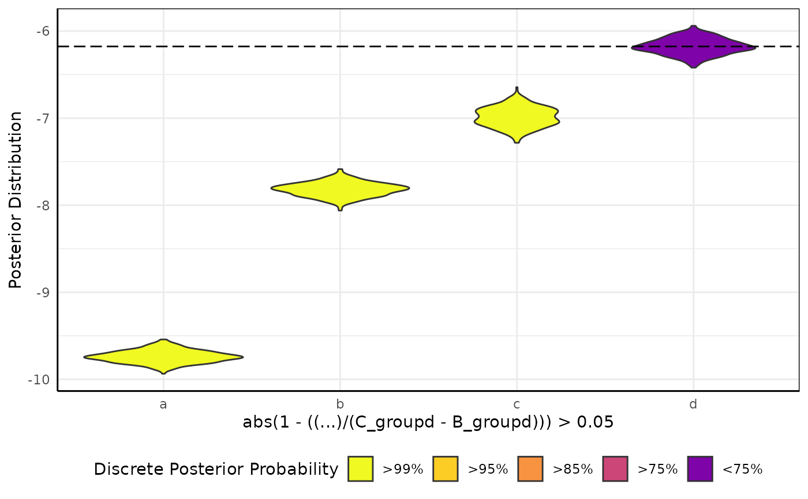
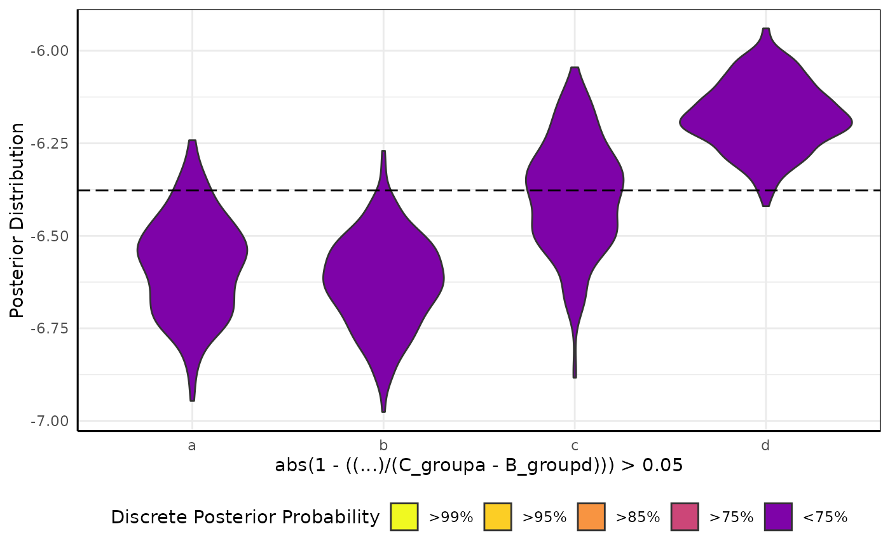
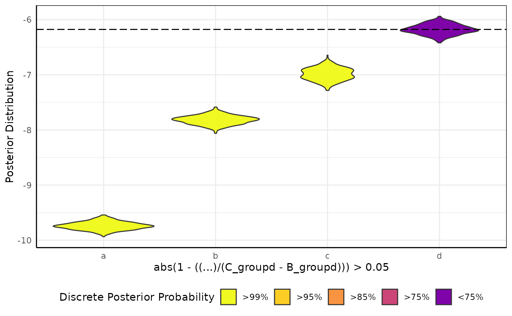
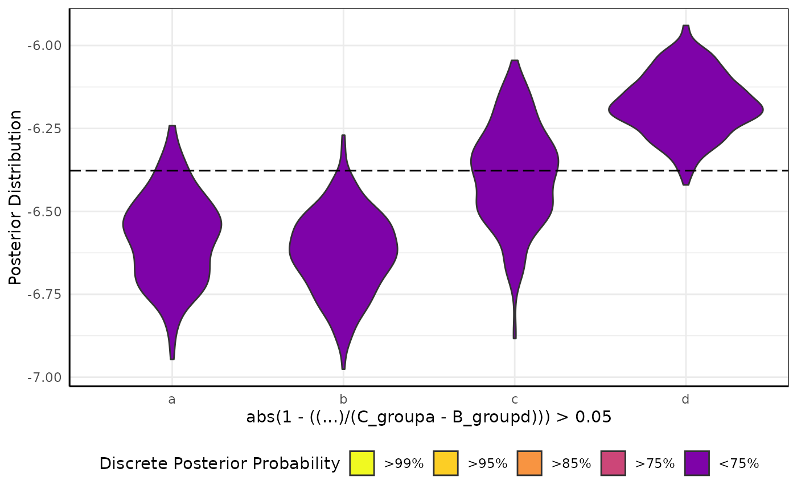

Function to visualize hypotheses tested on brms models similar to those made using growthSS outputs.
Source:R/brmViolin.R
brmViolin.RdFunction to visualize hypotheses tested on brms models similar to those made using growthSS outputs.
Arguments
- fit
A brmsfit object or a dataframe of draws. If you need to combine multiple models then use combineDraws to merge their draws into a single dataframe for testing.
- ss
A
pcvrssobject. The only component that is currently used is the pcvrForm.- hypothesis
A hypothesis expressed as a character string in the style of that used by
brms::hypothesisand testGrowth. In the hypothesis "..." can be used to mean "all groups for this parameter" so that the hypothesis "... / A_group1 > 1.05" would include all the "A" coefficients for groups 1:N along the x axis, see examples. If a hypothesis is using several parameters per group (second example) then math around those parameters and any ellipses should be wrapped in parentheses. Note that currently the single hypothesis option (no ...) only supports hypotheses using two parameters from the model at a time (ie, "groupA / groupB > 1.05" works but "(groupA / groupB) - (groupC / groupD) > 1" does not).
Value
Returns a ggplot showing a brms model's posterior distributions as violins and filled by posterior probability of some hypothesis.
Examples
# \donttest{
set.seed(123)
simdf <- growthSim(
"logistic",
n = 20, t = 25,
params = list("A" = c(200, 180, 190, 160), "B" = c(13, 11, 10, 10), "C" = c(3, 3, 3.25, 3.5))
)
ss <- growthSS(
model = "logistic", form = y ~ time | id / group, sigma = "int",
list("A" = 130, "B" = 10, "C" = 3),
df = simdf, type = "brms"
)
fit <- fitGrowth(ss, backend = "cmdstanr", iter = 500, chains = 1, cores = 1)
#> Start sampling
#> Init values were only set for a subset of parameters.
#> Missing init values for the following parameters:
#> b_sigma, Intercept_nu
#>
#> To disable this message use options(cmdstanr_warn_inits = FALSE).
#> Running MCMC with 1 chain...
#>
#> Chain 1 Iteration: 1 / 500 [ 0%] (Warmup)
#> Chain 1 Informational Message: The current Metropolis proposal is about to be rejected because of the following issue:
#> Chain 1 Exception: student_t_lpdf: Location parameter[1] is -nan, but must be finite! (in '/tmp/RtmpOCfYhe/model-22015cc66302.stan', line 97, column 4 to column 48)
#> Chain 1 If this warning occurs sporadically, such as for highly constrained variable types like covariance matrices, then the sampler is fine,
#> Chain 1 but if this warning occurs often then your model may be either severely ill-conditioned or misspecified.
#> Chain 1
#> Chain 1 Iteration: 100 / 500 [ 20%] (Warmup)
#> Chain 1 Iteration: 200 / 500 [ 40%] (Warmup)
#> Chain 1 Iteration: 251 / 500 [ 50%] (Sampling)
#> Chain 1 Iteration: 350 / 500 [ 70%] (Sampling)
#> Chain 1 Iteration: 450 / 500 [ 90%] (Sampling)
#> Chain 1 Iteration: 500 / 500 [100%] (Sampling)
#> Chain 1 finished in 6.8 seconds.
brmViolin(fit, ss, ".../A_groupd > 1.05") # all groups used
 brmViolin(fit, ss, "abs(1 - ((...)/(C_groupd - B_groupd))) > 0.05") # rather arbitrary

brmViolin(fit, ss, "abs(1 - ((...)/(C_groupa - B_groupd))) > 0.05") # totally arbitrary

brmViolin(fit, ss, "A_groupa/A_groupd > 1.05") # only these two groups
# }
brmViolin(fit, ss, "abs(1 - ((...)/(C_groupd - B_groupd))) > 0.05") # rather arbitrary

brmViolin(fit, ss, "abs(1 - ((...)/(C_groupa - B_groupd))) > 0.05") # totally arbitrary

brmViolin(fit, ss, "A_groupa/A_groupd > 1.05") # only these two groups
# }